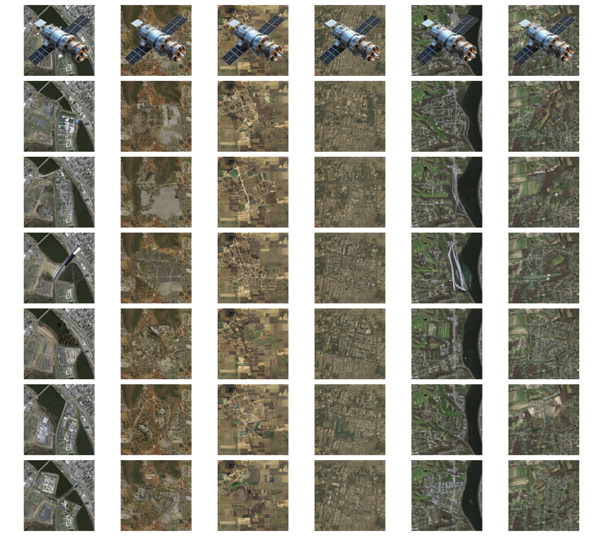

KAO: Kernel-Adaptive Optimization in Diffusion for Satellite Image Inpainting

Abstract
Satellite image inpainting is critical in remote sensing applications. We propose KAO, a diffusion-based framework enhanced with Kernel-Adaptive Optimization and Token Pyramid Transformer (TPT), enabling dynamic kernel modulation in latent space. KAO delivers high-fidelity, structure-aware reconstructions, outperforming existing models like Stable Diffusion, RePaint, and SatDiff across VHR datasets.
Results Overview
Qualitative comparison with 7 models. KAO shows superior restoration across various occlusion patterns.

Detailed sample comparisons. KAO excels in reconstructing linear features and textures in urban scenes.

Scene 1 – Urban satellite reconstruction comparison.

Scene 2 – Agricultural patterns, occlusion restoration.

Scene 3 – Reconstruction under heavy cloud occlusions.

Scene 4 – Comparison on semi-urban environment.

Scene 5 – Multi-resolution image restoration results.

Scene 6 – Zoomed-in structural fidelity of KAO.
BibTeX Citation
@article{panboonyuen2025kao,
author = {Teerapong Panboonyuen},
title = {KAO: Kernel-Adaptive Optimization in Diffusion for Satellite Image Inpainting},
journal = {IEEE Transactions on Geoscience and Remote Sensing},
year = {2025},
doi = {10.1109/TGRS.2025.3621738},
note = {Manuscript No. TGRS-2025-06970},
publisher = {IEEE}
}